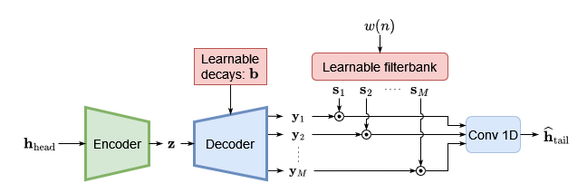

1Acoustics Lab, Department of Information and Communications Engineering, Aalto University, Espoo, FI-02150, Finland.
2Media Lab, Department of Art and Media, Aalto University, Espoo, FI-02150, Finland.
RIR Completion: An RIR divided at 50 ms into its head and tail components. The task is to predict the RIR tail from the RIR head.
Abstract
Abstract
Rendering immersive spatial audio in virtual reality (VR) and video games demands a fast and
accurate generation of room impulse responses (RIRs) to recreate auditory environments plausibly.
However, the conventional methods for simulating or measuring long RIRs are either computationally
intensive or challenged by low signal-to-noise ratios. This study is propelled by the insight that direct
sound and early reflections encapsulate sufficient information about room geometry and absorption
characteristics. Building upon this premise, we propose a novel task termed ”RIR completion,” aimed
at synthesizing the late reverberation given only the early portion (50 ms) of the response. To this end,
we introduce DECOR, Deep Exponential Completion Of Room impulse responses, a deep neural
network structured as an encoder-decoder designed to predict multi-exponential decay envelopes of
filtered noise sequences. The proposed method is compared against a much larger adapted state-of-
the-art network, and comparable performance shows promising results supporting the feasibility of
the RIR completion task. The RIR completion can be widely adapted to enhance RIR generation
tasks where fast late reverberation approximation is required.
Results
The audio examples below are the original raw RIR, the DECOR output, and the adapted FiNS baseline model output. Each example RIR is convolved
with speech from an internal speech dataset and music from a
public dataset of anechoic recordings of symphonic music.

DECOR: Network overview. DECOR predicts multi-exponential decay curves per filtered noise sequence to construct the RIR tail.
Example
Type
Dry
Reference
DECOR
FiNS
Example 1
RIR
Speech 1
Speech 2
Music
Example 2
RIR
Speech 1
Speech 2
Music
Example 3
RIR
Speech 1
Speech 2
Music
Example 4
RIR
Speech 1
Speech 2
Music
Example 5
RIR
Speech 1
Speech 2
Music
Citation
@article{lin2024deep,
title={Deep Room Impulse Response Completion},
author={Jackie Lin and Georg Götz and Sebastian J. Schlecht},
year={2024},
eprint={2402.00859},
archivePrefix={arXiv},
primaryClass={eess.AS}
}